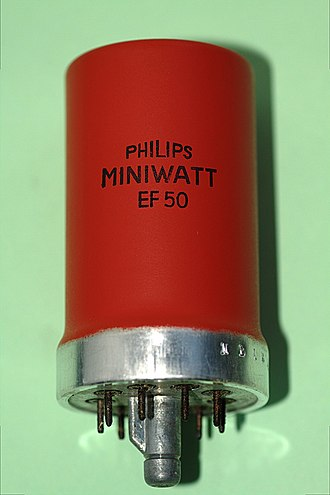
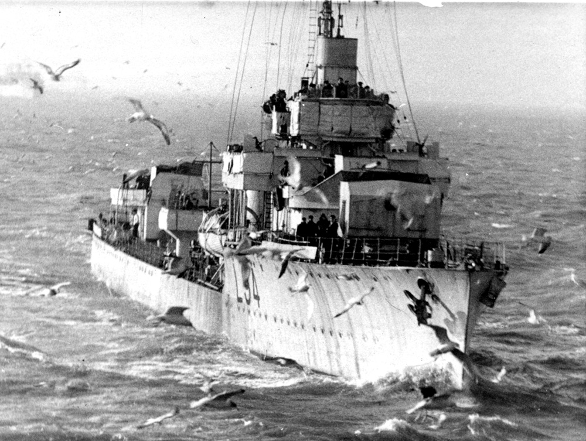
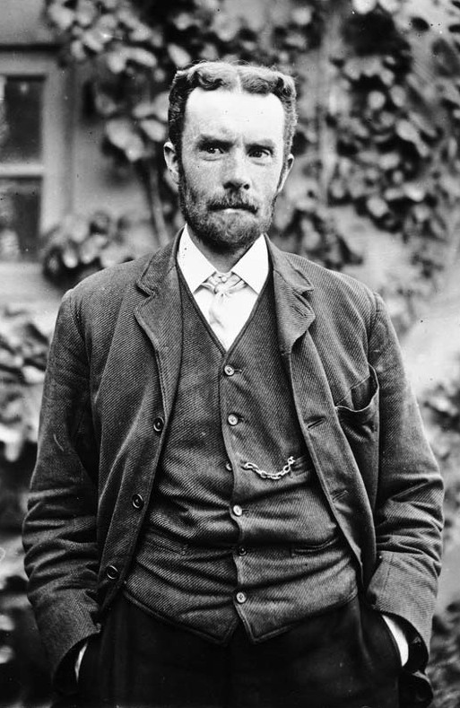
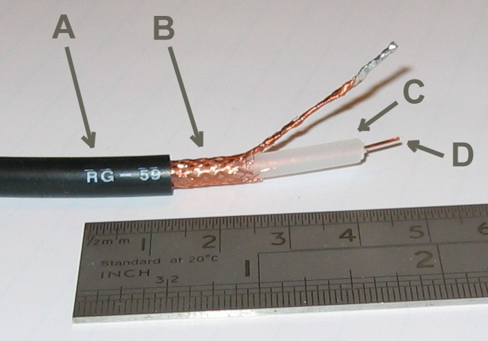
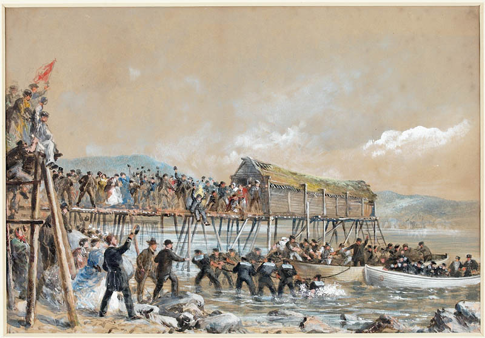
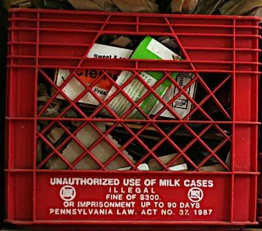

레이더 개발 이야기 (23) - 네덜란드로 구축함이 달려간 이유
게시: 2023-03-02T08:31:28+09:00
<네덜란드로 구축함이 달려간 이유> 공대공 레이더가 파장 길이 문제로 개발이 벽에 부딪힌 상태였던 것에 반해, 공대함 레이더인 ASV(Air-to-Surface Vessel) 레이더는 cavity magnetron이 개발되기 전에도 꽤 상당한 수준으로 발전됨. 그러나 ASV도 더 좋은 진공관이 필요했던 것은 마찬가지였는데, 이 문제는 송신기보다는 수신기에 더 민감했음. Bowen과 그의 팀은 가용한 진공관들을 이용하여 온갖 수신기 설계를 고안해보았으나, 대부분의 영국 전기전자 업체들은 쓸만한 수신기 설계에 실패하거나 아예 신경을 쓰지 않았음. 이제 막 전쟁이 시작될 무렵인지라 듣보잡(실은 극비)인 ASV 레이더 개발은 우선순위가 떨어졌던 것. 그러다 보웬은 우연히 BBC에서 실험하던 45MHz 텔레비전 방송 관련하여 Pye Electronics라는 회사에 그때 만든 수신기가 꽤 많이 남아있다는 이야기를 듣게 됨. 당장 달려가 테스트를 해보니 기존에 만들었던 모든 것보다 훨씬 뛰어남. 비결이 뭔지 찾아보니 파이 일렉트로닉스는 Philips사에서 개발된, VHF 주파수에 특화된 새로운 진공관인 EF50 "Miniwatt" (사진1)라는 것을 쓰고 있었음.

(이 진공관은 크기도 작고 주파수도 꽤 높게 나왔으며, 무엇보다 전력 사용량에서 매우 뛰어난 성질을 보여주었다고.)
그 진공관의 제조원 딱지에는 Mullard라고 찍혀 있길래 또 알아보니 이 회사는 (원래 네덜란드 회사인) 필립스의 영국 지사였음. 공군성 동원해서 서둘러 멀라드 사에 추가 대량 생산을 문의해보니 안된다고 함. 이유는 그 미니왓이라는 진공관은 실은 영국 멀라드에서 만든 것이 아니라 네덜란드 아인트호벤에 있는 필립스 본사 공장에서 만든 것이라는 것. 왜 멀라드라는 제조원이 붙어있냐고 추궁하니 '실은 영국 공장에서 만들어보려고 애를 많이 썼는데 결국 진공관 기저판(base) 제조에는 실패했다'는 대답. 결국 당장 이걸 영국의 멀라드 공장에서 생산하려면 필요한 것이 필립스 네덜란드 본사의 기술진들. 그런데 때는 1939년 중반, 나찌 독일이 네덜란드를 언제든 침공할 수 있는 상황. 영국에서는 구축함 HMS Windsor(사진2, 1918년 진수, 1200톤, 34노트)와 함께 화물선 2척을 네덜란드로 급파. 윈저에는 필립스 기술진을 태웠고, 화물선에는 필립스 공장에 쌓여 있던 이미 완성된 EF50 미니왓 진공관 2만5천개와 함께, 추가로 영국 공장에서 진공관을 만들 재료가 되는 그 특수 기저판 2만5천개를 실어옴.

(사진 속 사람의 크기에서 볼 수 있듯이 구축함 치고도 꽤 작은 편인 HMS Windsor는 당연히 1940년 5월 말 덩케르크 철수 작전에도 동원되어 호송 역할을 수행. 5월 28일에는 15대의 독일 공군기의 공격을 받아 30명의 사상자를 냄. 이후 주로 북해 수송단 호위에 동원되다 1944년 노르망디 상륙 작전에도 참여. 종전 때까지 살아남음.)
이것들을 이용하여 파이 일렉트로닉스에서는 ASV 레이더의 scope로 사용될 CRT(브라운관)를 양산하기 시작. 당시엔 몰랐으나 이 진공관들이 대서양에서 영국의 생명선을 위협하던 U-boat들의 사형선고가 됨.
<레이더 연구에 화학이 설 자리는 없...다?> 요즘 인공지능이나 반도체가 잘 나간다고 해서 대학에 인공지능 학과, 반도체 학과를 세우는 것은 바보짓. 모두 수학, 물리학, 화학 등의 기초 과학의 발전 없이는 불가능한 것들. WW2 초기 레이더 개발도 마찬가지. 여태까지 보아왔듯이 전파 연구하는 사람들만 필요한 것이 아니라 진공관 등 기초 소재 공업도 발달해야 하고 발전기(generator 및 alternator) 공업도 발달해야 함. 그런데 화학 및 화학공학도 발전해야 함. 1939년 WW2가 시작되고 나서도 보웬의 연구팀은 공대공(AI) 및 공대함(ASV) 레이더 개발에 문제를 겪고 있었음. 고질적인 진공관 문제 외에도 여러가지 다양한 문제 중 하나는 송수신 안테나에 연결된 신호 전선. 강력한 전자파 펄스를 쏘아대는 레이더 안테나 바로 옆에서 미약한 반사파를 잡아내고 그걸 당시의 조악한 CRT 디스플레이에서 잡아내려면 여러가지 잡신호, 특히 송신 안테나로 발사되는 그 전자파 펄스로부터 회로를 보호해야 함.

(사진이 1880년 coaxial cable에 대한 특허를 출원한 Oliver Heaviside. 헤비사이드는 정규 교육을 받지 않고도 독학으로 라플라스 방정식 같은 미분 방정식을 푸는 독자적인 방법론을 만들기도 하고, Maxwell 방정식을 요즘 사용되는 형태로 고쳐 쓰기도 하는 등 엄청난 수학자 및 물리학자가 된 인물. 이 양반은 당시 쓸모도 별로 없었을 것 같은 동축 케이블을 발명하고 특허까지 낸 이유로 '손실 없는 신호 처리에 꼭 필요할 것'이라고도 예언.)
이건 coaxial cable 즉 동축 케이블을 만들어서 보호할 수 있음. 맨 안 쪽에 실제 신호가 오가는 구리선을 넣되, 그 주변을 1차 절연체로 감싸고 1차 절연체 위에 금속망으로 구성된 전자파 보호망(shield)을 씌운 뒤, 다시 외장 절연체로 감싸는 것. 문제는 저렇게 맨 안 쪽의 구리선과 그 바깥쪽 전자파 보호망은 모두 도체이고, 그 사이에 절연체가 있는 구조는 어디선가 많이 본 구조라는 것. 그러함. 저런 구조는 바로 콘덴서(capacitor)가 됨. 특히 레이더 송수신 안테나처럼 엄청난 주파수의 신호가 오가면 그 사이에 전하가 엄청 쌓이게 되고 이는 에너지 손실로 이어짐.

(사진1이 coaxial cable의 구조. 흔히 핵폭탄이 터지면 EMP 효과 때문에 인근의 모든 전자장비들이 고장난다고 하는데, 거기에 대한 대비책이 바로 저 coaxial cable. 모든 외부 전자기파를 저 금속망이 막아줌.)
에너지 손실을 막으려면 유전율(dielectric permittivity)가 낮아야 하는데, 가장 낮은 것은 진공, 그 다음이 공기인데, 그런 것들로는 맨 가운데의 구리선과 그를 둘러싼 금속망 사이를 유지할 수가 없으므로 안됨. 1865년 최초의 대서양 횡단 해저 케이블이 놓일 때 그 케이블에 입힐 절연체로는 Chatterton 화합물이라는 목재질과 천연수지, 타르 같은 것을 섞은 것을 썼다는데, WW2 직전까지는 헝겊이나 고무, 종이 등 여러가지 재료가 사용되었음.

(1866년 캐나다 뉴펀들랜드 섬에 마침내 끌어올려지는 대서양 횡단 해저 케이블의 모습. 출발지는 아일랜드 옆의 Valentia 섬. 여기에 동원된 해군 전함들이나 기타 온갖 이야기는 다른 기회에 다룰 기회가 있기를.)
그런데 그런 유전율이 낮은, 절연체로 딱 좋은 신소재가 이미 1898년 우연히, 전파를 독일인 헤르츠가 처음 실험했듯이 역시 독일에서 발명된 바 있었음. 독일 화학자 Hans von Pechmann가 다른 실험을 하다 밀납 같은 하얀 물질을 만들어낸 것. 나중에 다른 학자들이 이걸 조사해보고는 탄화수소가 포함된 유기물이라는 것을 발견하고 이름을 polymethylene이라고 지음. 그러나 독일인들은 산업용으로 쓸 생각은 전혀 못함. 안정적인 생산이 불가능했기 때문. 운명이라고 해야 할지, 이걸 산업용으로 생산할 계기를 찾아낸 것은 또 1933년 영국에서였음. Imperial Chemical Industries (ICI)에서 Eric Fawcett과 Reginald Gibson라는 화학자들이 polythene을 합성하는 방법을 또 우연히 발견한 것. 이건 높은 압력을 필요로 하는 방법이라서 이건 대량 생산에 적합하지는 않았고, 1935년 다른 ICI 소속 화학자인 Michael Perrin가 좀 더 쉽게 대량 생산하는 방법을 개발. 이것으로 대량 생산이 시작된 것은 4년의 준비 기간을 거친 1939년. 바로 WW2가 터질 때였음. 레이더용 coaxial cable을 만들 절연체를 찾던 영국 공군성은 이 폴리에틸렌에 대해 상업용 생산을 중단시키는 것은 물론 모든 것을 비밀에 붙이고 모조리 군용으로 돌림. 1944년 미국에서는 Dupont 사가 ICI로부터 라이센스를 취득하여 대량 생산 시작. 화학자들이 없었다면 레이더도 없었음.

(Polyethylene으로 만들어진 대표적 물건인 우유 상자 (milk crate). 튼튼하고 가볍고 쓸모가 많아서 미국에서는 의외로 매우 흔히 도난되는 물건이라고. 그래서 박스에 저런 경고문도 쓰여있는데, 정작 조사를 해보니 대부분의 도난된 밀크 크레이트는 재활용 공장으로 직행한다고.)